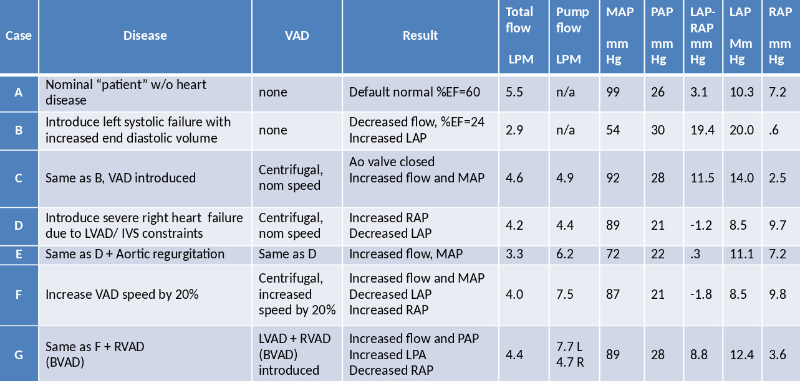
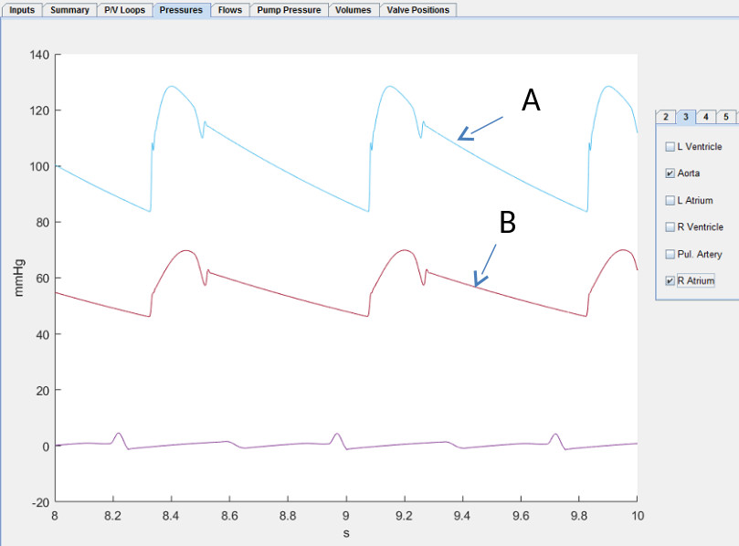
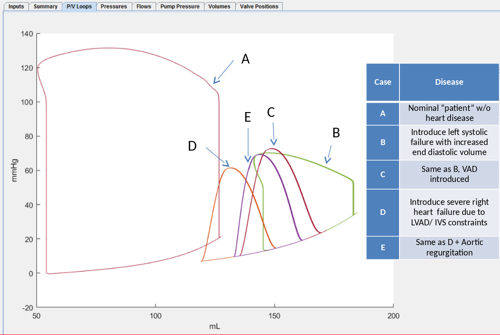
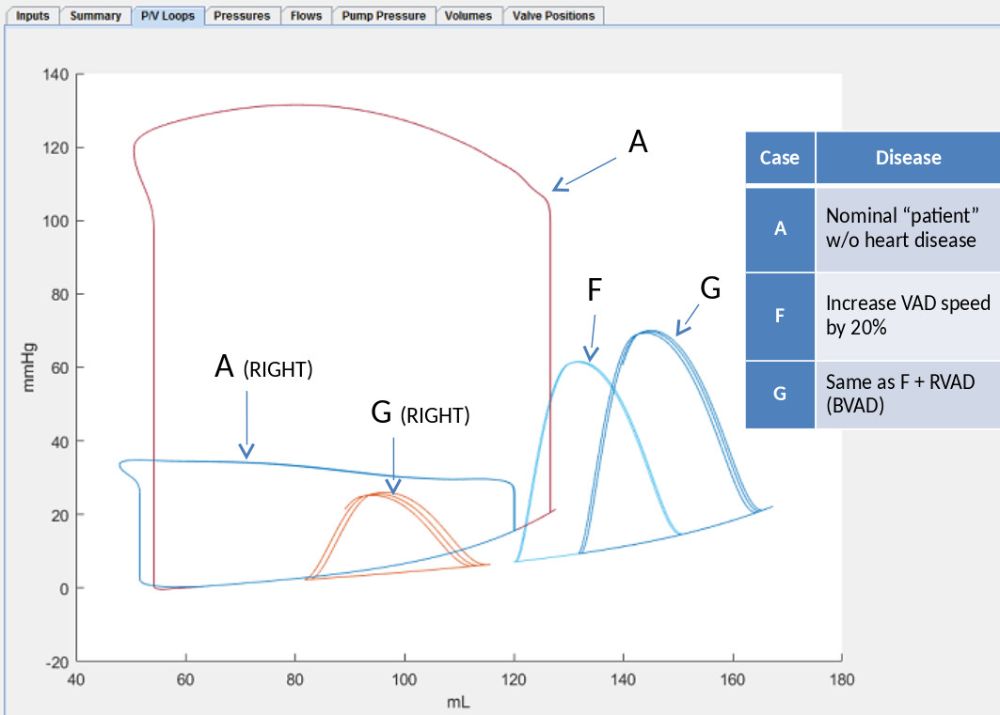

Example Virtual Mock Loop Output for a progression of disease cases with LVAD and BVAD

Case A: Example Normal
Case B: Left systolic failure with increased end diastolic volume

Case C: Left failure with VAD at nominal speed

Case D: Left and right failures with LVAD
Case E: Left and right failures with aortic regurgitation and LVAD

Case F: Left and right failures with aortic regurgitation and LVAD at +%20 speed
Case G: Left and right failures with aortic regurgitation and LVAD at +%20 speed plus RVAD

Pressure over volume loops


Pump pressure over flow